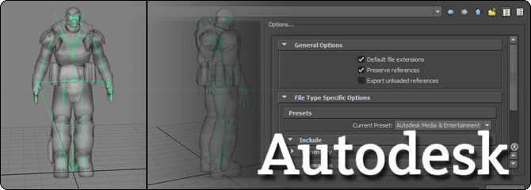
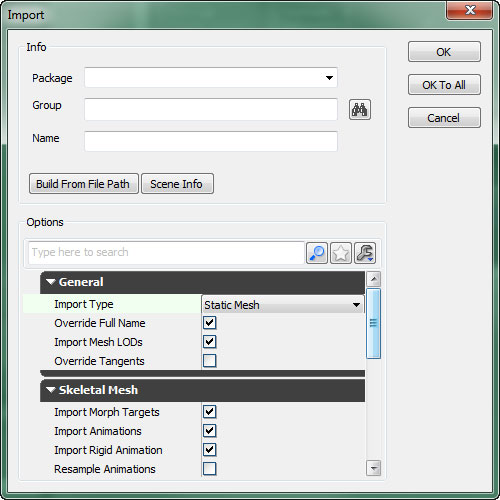
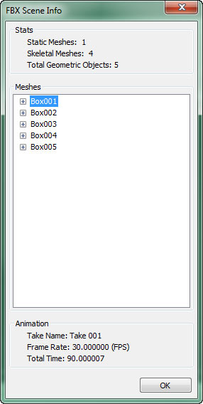
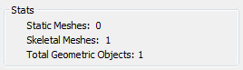

UDN
Search public documentation:
FBXPipelineCH
English Translation
日本語訳
한국어
Interested in the Unreal Engine?
Visit the Unreal Technology site.
Looking for jobs and company info?
Check out the Epic games site.
Questions about support via UDN?
Contact the UDN Staff
日本語訳
한국어
Interested in the Unreal Engine?
Visit the Unreal Technology site.
Looking for jobs and company info?
Check out the Epic games site.
Questions about support via UDN?
Contact the UDN Staff
UE3主页 > FBX内容通道
FBX内容通道

- 静态网格物体、骨架网格物体、动画、顶点变形目标最终都是一种单独的文件格式。
- 多个 资源/内容 可以包含在一个单独的文件中。
- 在一个导入操作中进行多个LODs及 顶点变形/混变形 的导入。
- 随同网格物体导入了材质和贴图并将它们应用到网格物体上。
- FBX静态网格物体通道 -将静态网格物体从3D应用程序中转移到UnrealEd中。
- FBX骨架网格物体通道 - 将骨架网格物体从3D应用程序中转移到UnrealEd中。
- FBX动画通道 - 将骨架动画从3D应用程序中转移到UnrealEd中。
- FBX顶点变形目标通道 - 将顶点变形目标从3D应用程序中转移到虚幻编辑器中。
- FBX材质通道 - 将材质和贴图从3D应用程序中转移到UnrealEd中。
- 使用QuickTime查看FBX文件 - 如何设置QuickTime来查看FBX文件。
- FBX最佳实践 - 当使用FBX时的最佳实践。
FBX导入对话框

一般 这些选项既可以应用到静态网格物体上也可以应用到骨架网格物体上。- Import Type(导入类型) - 自动从选中的文件头继承来。如果文件包含Deformer（变形器）,那么Import Type(导入类型)设置为骨架网格物体，否则设置它为静态网格物体。当导入类型是骨架网格物体时，将不会导入FBX文件中的静态网格物体。
- 如果原始类型是静态网格物体，但是用户把它改为了骨架网格物体，那么将不会导入任何东西，因为没有找到能够变形的骨架。
- 如果原始的类型是骨架网格物体，但是用户把它改为静态网格物体，那么将会把它导入为静态网格物体。
- Override Full Name(覆盖全名) - 如果该项为TRUE并且FBX文件仅包含一个网格物体，将会使用 Name(名称） 域中指定的名称作为导入的网格物体的全名。否则，将使用命名规则。
- Import Mesh LODs - 如果该项为TRUE，那么将会从定义在文件中的LODs创建虚幻网格物体的LOD模型。否则，则仅从LOD组中导入基本的网格物体。对于骨架网格物体来说，LOD模型可以植皮到同样的骨架或不同的骨架上。如果LOD模型被植皮到了不同的骨架上，那么它必须满足虚幻LOD的要求，但是根骨骼的名称是不同的，因为FBX导入器自动地重命名跟骨骼。
- Override Tangents(覆盖切线) - 如果该项为TRUE，将会覆盖网格物体的法线和切线数据。
- 导入顶点变形目标 - 如果该项为TRUE，则为骨架网格物体创建顶点变形对象。既支持Maya Blendshapes(混合形状)修改器也支持3ds Max Morph(顶点变形)修改器。
- 导入动画 - 如果该项为TRUE，将根据选中的骨架网格物体的FBX文件中所有的可用动画创建新的动画集。
- Import Rigid Animation(导入刚体动画) - 如果该项为TRUE，将会从FBX文件中导入未植皮的、基于层次结构的动画。
- Resample Animations(重命名动画) - 如果该项和
Import Animations都为TURE，那么导入的所有动画曲线都会重新采样为30FPS。 - 高级
- Use T0As Ref Pose(使用T0作为参考姿势) - 如果该项为TRUE,那么将使用动画轨迹的第一帧(帧0)替换骨架网格物体的参考姿势。
- Split Non Matching Triangle(分割不匹配的三角形) - 如果该项为TRUE，那么将完全地具有不匹配的平滑组的三角形，复制共享的顶点。
- Combine Meshes(组合网格物体) - 如果该项为TRUE，那么FBX页面中包含的所有静态网格物体都会组合到一个单独的静态网格物体中。
- 高级
- Explicit Normals(精确的法线) - 如果该项为TRUE, 那么将会从FBX文件中读取网格物体的法线而不是计算它们。
- Remove Degenereates(删除退化的三角形) -如果该项为TRUE, 那么将会删除网格物体中任何退化的三角形。这个选项一般设置为启用状态。
- Import Materials(导入材质) -如果该项为TRUE, 将会在虚幻引擎中创建FBX文件中的每个材质。
- Import Textures(导入贴图) - 如果该项为TRUE, 将会把FBX文件中引用的贴图导入到虚幻引擎中。如果
Import materials为TRUE，那么无论这项设置为什么将总是导入贴图。 - Invert Normal Maps(反转法线贴图) - 如果该项为TRUE并且正在导入贴图，那么将会反转法线贴图的值。
- Create Groups Automatically(自动地创建组) -如果该项为TRUE，那么任何生成的材质或导入的材质都将被自动地放置到指定包中的‘Material（材质）’和‘Texture（贴图）’组中。
FBX页面信息对话框
 按钮来打开FBX Scene Info(FBX场景信息)窗口,它显示了要导入的FBX文件的内容信息。对于较大的文件，获取场景信息会花费较长的时间。
按钮来打开FBX Scene Info(FBX场景信息)窗口,它显示了要导入的FBX文件的内容信息。对于较大的文件，获取场景信息会花费较长的时间。

统计数据
Stats(统计数据)部分显示了FBX文件内容的所有统计数据。
- Static Meshes(静态网格物体) - 显示了文件中包含的静态网格物体元素的数量。
- Skeletal Meshes(骨架网格物体) - 显示了文件中包含的骨架网格物体元素的数量。
- Total Geometric Objects(总的几何体对象数) - 显示了文件中包含的几何体元素的总数量(静态网格物体和骨架网格物体)。
网格物体
Meshes(网格物体)部分显示了文件中包含的几何体对象列表和关于每个网格物体的各种统计数据。 一般
静态网格物体和骨架网格物体都会显示这些项。
一般
静态网格物体和骨架网格物体都会显示这些项。
- Mesh Type(网格物体类型) - 显示了网格物体的类型，包括静态网格物体或骨架网格物体。
- Faces(面) - 显示了网格物体包含的多边形的数量。
- Vertices(顶点) - 显示了构成网格物体的顶点的数量。
- Triangulated(三角化) - 显示了在导出网格物体时是否对其进行了三角化处理。
- Skeletal Root(跟骨骼) - 显示了骨架网格物体的根骨骼的名称。
- Skeletal Elements(骨架元素) - 显示了骨架中包含的骨骼的数量。
- Morph Count(顶点变形目标数量) - 显示了网格物体中包含的顶点变形目标的数量。
动画
Animation(动画)部分显示了文件中包含的关于动画的信息。
- Trake Name（动画轨迹名称） - 显示了动画轨迹的名称。
- Frame Rate(帧频率) - 显示了动画的帧频率(每秒中的帧数)。
- Total Time(总时间) - 显示了动画的总持续时间(秒)。
命名规则
| FBX | ActorX / ASE | |
|---|---|---|
| 静态网格物体 | • 如果 %1 是: • Not empty(不为空) - 如果Combine As Single(组合为单独项)是: • Enabled(启用) - 命名为 %1. • Disabled(禁用) - 命名为 %1_%2. • Empty(空) - 命名为 %2. | • 如果 %1是: • Not empty(不为空) - 命名为 %1. • Empty(空) - 命名为 StaticMesh_xx. |
| 骨架格物体 | • 如果 %1 是: • Not empty(不为空) - 命名为 %1_%2. • Empty(空) - 命名为 %2. | • 如果 %1 是: • Not empty(不为空) - 命名为 %1. • Empty(空) - 命名为 SkeletalMesh_xx。 |
| 动画集 | • 当动画集随同骨架网格物体导入时根据骨架的跟骨骼命名。 • 当选择AnimSet Editor(动画集编辑器) → File(文件) → New AnimSet(新建动画集)...时由用户名名。 | • 当选择AnimSet Editor(动画集编辑器) → File(文件) → New AnimSet(新建动画集)...时由用户名名。 |
| 动画序列 | • 如果FBX文件中只有一个序列则将其命名为文件名称。 • 如果FBX文件中有多个序列，则命名为 %1_%2。 | • 当从ActorX导出该序列时则将其命名为PSA中设置的名称。 |
| 顶点变形目标集 | • 当随同骨架网格物体导入该顶点变形目标时将其命名为 %1_%2_MorphTargetSet。 • 当选择AnimSet Editor(动画集编辑器) → File(文件) → New MorphTargetSet(新建顶点变形目标集)...时由用户名名。 | • 当选择AnimSet Editor(动画集编辑器) → File(文件) → New MorphTargetSet(新建顶点变形目标集)...时由用户名名。 |
- %1 – 导入对话框的Name（名称)域中的字符串。
- %2 – FBX文件中的网格物体节点名称。对于骨架网格物体，如果它是由多个FBX网格物体组成，那么则使用第一个FBX网格物体名称作为FBX节点名称的一部分。